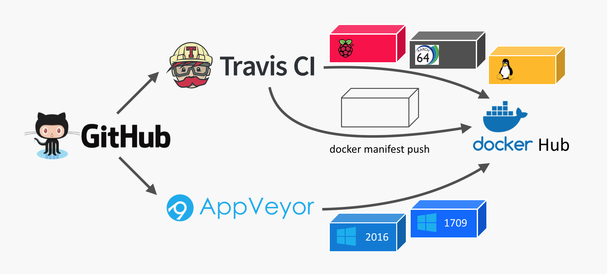
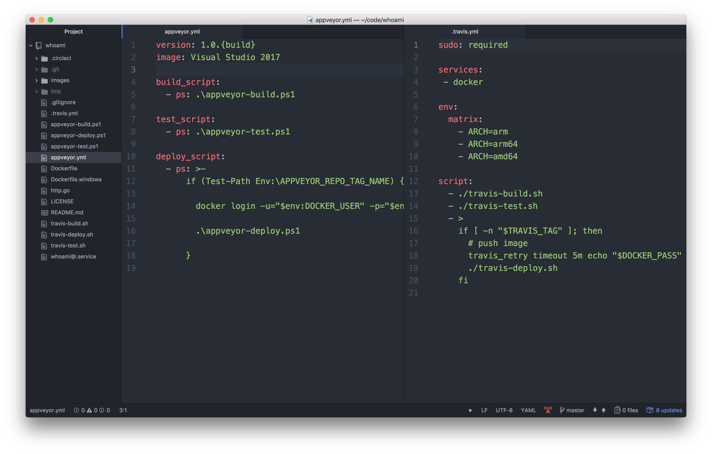
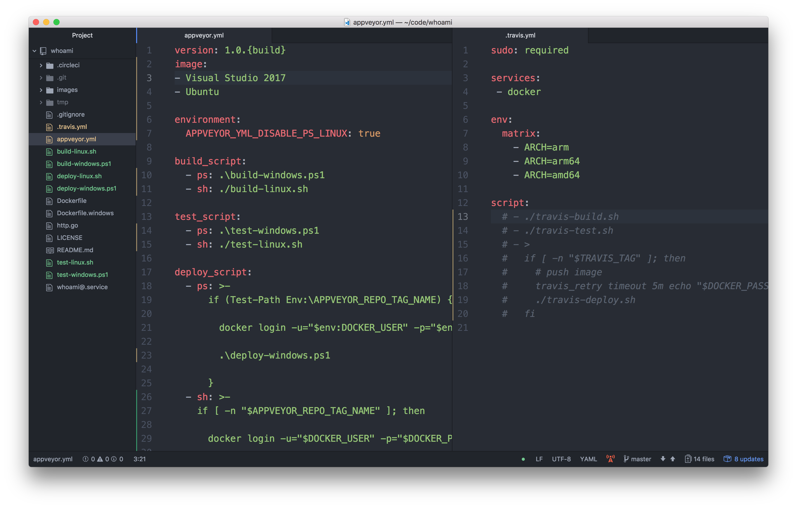
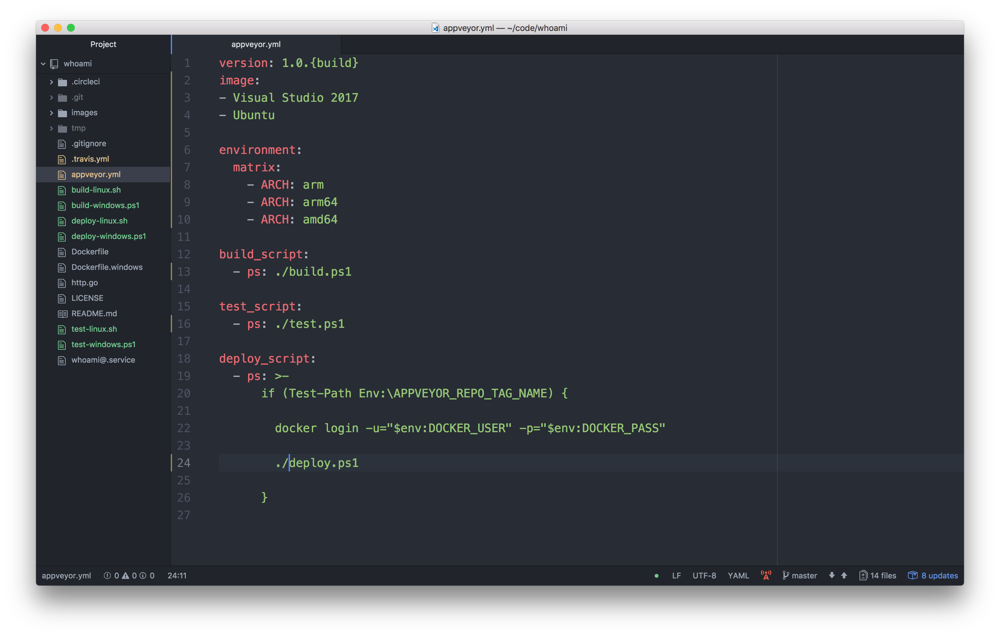
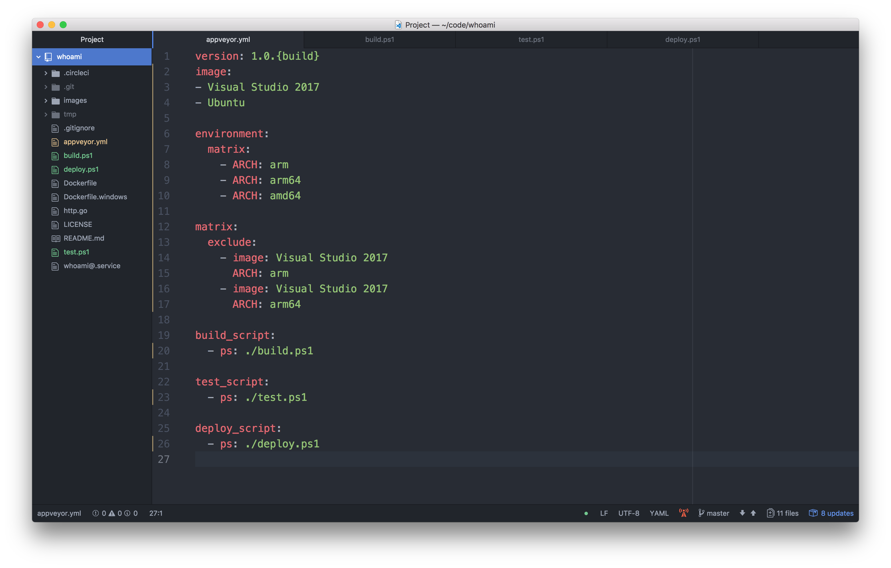
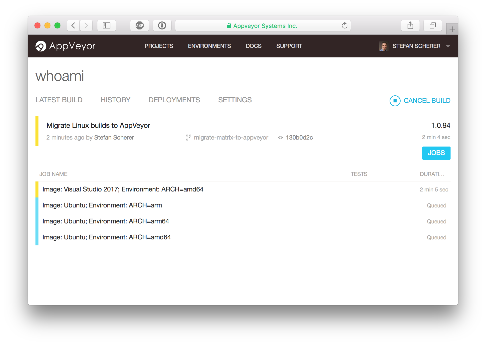
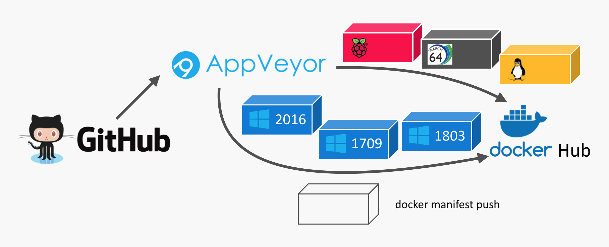
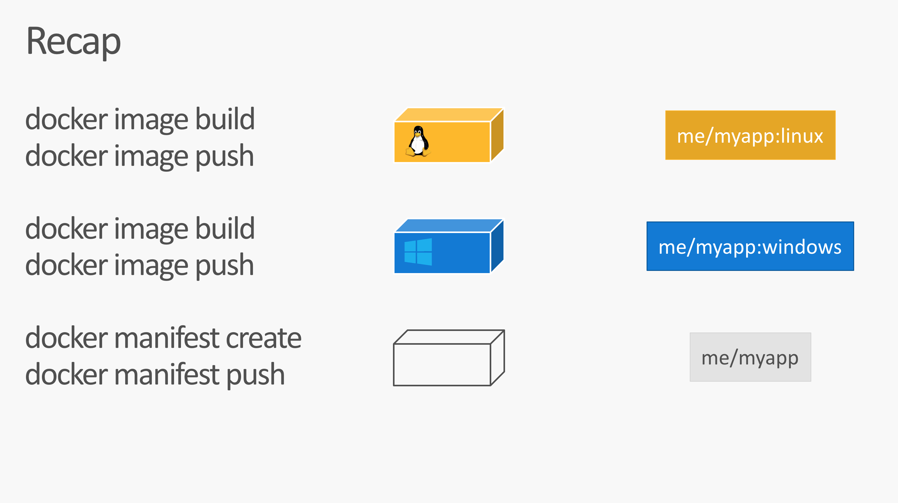

After some months of private beta AppVeyor recently has announced general availability of their Linux build agents. In this blog post I want to show you what we can do with this new feature.
In my previous blog post I showed how you can fork the example repo and build it your own, adjust it and learn all the details of the application, the Dockerfiles and the build steps.
This blog post shows the details about a Linux and Windows builds and how you can combine that to a multi-arch Docker image.
What is AppVeyor?
But first we have to start with AppVeyor. The GitHub market place shows a lot of offerings for continuous integration. This is what you normally want to have automatic tests for each Git commit or pull request you receive.
AppVeyor is my #1 place to go if I want Windows builds. I use it for several years now, you can do your .NET builds, native C/C++ builds and even Windows Containers with it. It is really easy to attach it to your GitHub repo with a YAML file.
Whoami
After the announcement for the new Linux build agents I looked into my sample whoami repo that builds a multi-arch Docker image that works both for Linux and Windows. I was curious to find out how the Linux builds work on AppVeyor. Because then I can just use one CI provider instead of two different.
The CI pipeline before that evening looked like this.

I used Travis CI for all the Linux builds. There was a build matrix to build Linux Docker images for three different CPU architectures: x64, arm and arm64.
For the Windows builds I already used AppVeyor as they provider Docker builds as well.
The difficult part was to synchronise all builds to run the final step to create a Docker manifest that combines all Docker images to just one manifest.
Two YAMLs
I opened the two YAML files that describe the CI pipeline for each service:
appveyor.ymlfor Windows on the left side.travis.ymlfor Linux on the right side

The YAML have a similar structure. There are three steps
- build
- test
- deploy (if it's a tagged release build)
And the Travis build has a build matrix for three variants.
I started to draft the updated appveyor.yml how it could look like when the Linux build gets migrated from the .travis.yml into it.
PowerShell and BASH mixture
The first idea was to just re-use the Windows PowerShell scripts and the Linux BASH scripts and call in from one YAML.

Hm, now the appveyor.yml looked messy. You can tell with ps: that you want to run PowerShell, with sh: you can choose BASH.
With the environment variable APPVEYOR_YML_DISABLE_PS_LINUX: true you can turn off PowerShell support for Linux.
But it really looked ugly.
PowerShell on Linux, really?
Microsoft has announced PowerShell support on Linux months ago. But I only smiled upto now. What should I do with just another script language on Linux, I thought? It only made sense when you come from Windows and don't want to learn BASH.
But looking at this mixed YAML mixture I thought: "Hey, let's try PowerShell on Linux here" to have a platform independent script.
I just edited the YAML file how it should look like.

Much cleaner. Oh, what about these Unix slashes? But cool, they really work in PowerShell, even on Windows.
The only tricky part was integrating the Travis build matrix into the AppVeyor build matrix. My use-case is running one Windows build, but three Linux builds configured by an environment variable.
With some excludes (thanks to AppVeyor support) the YAML now looks like this

And hey, the build matrix in AppVeyor looked promising.
- Windows, amd64
- Linux, arm
- Linux, arm64
- Linux, amd64

The updated AppVeyor only CI pipeline now looks like this.

The three Windows images are done in a different way. Once there are different Docker build agents to support 1709 and 1803 images I can move that to the build matrix as well.
appveyor.yml
This is the appveyor.yml to define a matrix build for three Linux builds and one Windows build.
version: 1.0.{build}
image:
- Visual Studio 2017
- Ubuntu
environment:
matrix:
- ARCH: arm
- ARCH: arm64
- ARCH: amd64
matrix:
exclude:
- image: Visual Studio 2017
ARCH: arm
- image: Visual Studio 2017
ARCH: arm64
build_script:
- ps: ./build.ps1
test_script:
- ps: ./test.ps1
deploy_script:
- ps: ./deploy.ps1
build.ps1
The platform independent build script has the docker build command. As the Dockerfile differs for Windows I have to choose a different name as well add the build argument for the Linux build. But with the $isWindows variable you can easily check whether this script runs in the Windows agent or the Linux agent.
$ErrorActionPreference = 'Stop';
Write-Host Starting build
if ($isWindows) {
docker build --pull -t whoami -f Dockerfile.windows .
} else {
docker build -t whoami --build-arg "arch=$env:ARCH" .
}
docker images
test.ps1
The platform independent test script skips the ARM images, I haven't tested QEMU in the Linux builder that could help to even run the ARM images in the x64 Linux build agent.
The test starts the container. We could add a Invoke-WebRequest call to check if the web server responds with 200 OK. But this test is enough for now.
Write-Host Starting test
if ($env:ARCH -ne "amd64") {
Write-Host "Arch $env:ARCH detected. Skip testing."
exit 0
}
$ErrorActionPreference = 'SilentlyContinue';
docker kill whoamitest
docker rm -f whoamitest
$ErrorActionPreference = 'Stop';
Write-Host Starting container
docker run --name whoamitest -p 8080:8080 -d whoami
Start-Sleep 10
docker logs whoamitest
$ErrorActionPreference = 'SilentlyContinue';
docker kill whoamitest
docker rm -f whoamitest
deploy.ps1
The platform independent deploy script first pushes each platform specific image from each build agent.
The last build agent in the matrix, it's the Linux amd64 variant, then creates the manifest list and also pushes the manifest list to Docker Hub.
It first stops if there is no tagged build. So only GitHub releases will be pushed to Docker Hub.
$ErrorActionPreference = 'Stop';
if (! (Test-Path Env:\APPVEYOR_REPO_TAG_NAME)) {
Write-Host "No version tag detected. Skip publishing."
exit 0
}
Then we define the Docker image name for the final Docker image (the manifest list, to be exact):
$image = "stefanscherer/whoami"
Write-Host Starting deploy
(Experimental) batteries included
To create the manifest list I use the Docker CLI to avoid downloading extra tools. But we have to enable experimental features in Docker CLI first:
if (!(Test-Path ~/.docker)) { mkdir ~/.docker }
'{ "experimental": "enabled" }' | Out-File ~/.docker/config.json -Encoding Ascii
I showed these experimental feature in several talks. But here is a small overview. In addition to docker push - or docker image push there are two new commands: docker manifest create and docker manifest push:

For the next steps we need to be logged in with the Docker Hub account.
docker login -u="$env:DOCKER_USER" -p="$env:DOCKER_PASS"
Push the platform specific image
Now the script tags and pushes the platform specific Docker image with a correpsonding tag name.
$os = If ($isWindows) {"windows"} Else {"linux"}
docker tag whoami "$($image):$os-$env:ARCH-$env:APPVEYOR_REPO_TAG_NAME"
docker push "$($image):$os-$env:ARCH-$env:APPVEYOR_REPO_TAG_NAME"
Windows build: rebase-docker-image
For the Windows build I additionally run my rebase-docker-image tool. This is a hacker tool to replace the Windows base image from a given image with another version of the Windows base image. This works only in a few cases, but the whoami Golang binary and Dockerfile is safe for such hacks as this app really doesn't depend on the specific underlying base image. You can read more about that tool in my blog post PoC: How to build images for 1709 without 1709.
We create both a 1709 and 1803 variant as long as there is no AppVeyor build agent that is able to produce 'native' Docker builds for that.
if ($isWindows) {
# Windows
Write-Host "Rebasing image to produce 1709 variant"
npm install -g rebase-docker-image
rebase-docker-image `
"$($image):$os-$env:ARCH-$env:APPVEYOR_REPO_TAG_NAME" `
-t "$($image):$os-$env:ARCH-$env:APPVEYOR_REPO_TAG_NAME-1709" `
-b microsoft/nanoserver:1709
Write-Host "Rebasing image to produce 1803 variant"
npm install -g rebase-docker-image
rebase-docker-image `
"$($image):$os-$env:ARCH-$env:APPVEYOR_REPO_TAG_NAME" `
-t "$($image):$os-$env:ARCH-$env:APPVEYOR_REPO_TAG_NAME-1803" `
-b microsoft/nanoserver:1803
}
Linux build: Create and push manifest list
The Linux amd64 build agent runs as the last one in the matrix build, so it's easy to create the manifest list. All platform specific Docker images are already pushed to Docker Hub.
We run docker manifest create and then docker manifest push for the target image name.
else {
# Linux
if ($env:ARCH -eq "amd64") {
# The last in the build matrix
docker -D manifest create "$($image):$env:APPVEYOR_REPO_TAG_NAME" `
"$($image):linux-amd64-$env:APPVEYOR_REPO_TAG_NAME" `
"$($image):linux-arm-$env:APPVEYOR_REPO_TAG_NAME" `
"$($image):linux-arm64-$env:APPVEYOR_REPO_TAG_NAME" `
"$($image):windows-amd64-$env:APPVEYOR_REPO_TAG_NAME" `
"$($image):windows-amd64-$env:APPVEYOR_REPO_TAG_NAME-1709" `
"$($image):windows-amd64-$env:APPVEYOR_REPO_TAG_NAME-1803"
docker manifest annotate "$($image):$env:APPVEYOR_REPO_TAG_NAME" "$($image):linux-arm-$env:APPVEYOR_REPO_TAG_NAME" --os linux --arch arm --variant v6
docker manifest annotate "$($image):$env:APPVEYOR_REPO_TAG_NAME" "$($image):linux-arm64-$env:APPVEYOR_REPO_TAG_NAME" --os linux --arch arm64 --variant v8
docker manifest push "$($image):$env:APPVEYOR_REPO_TAG_NAME"
Write-Host "Pushing manifest $($image):latest"
docker -D manifest create "$($image):latest" `
"$($image):linux-amd64-$env:APPVEYOR_REPO_TAG_NAME" `
"$($image):linux-arm-$env:APPVEYOR_REPO_TAG_NAME" `
"$($image):linux-arm64-$env:APPVEYOR_REPO_TAG_NAME" `
"$($image):windows-amd64-$env:APPVEYOR_REPO_TAG_NAME" `
"$($image):windows-amd64-$env:APPVEYOR_REPO_TAG_NAME-1709" `
"$($image):windows-amd64-$env:APPVEYOR_REPO_TAG_NAME-1803"
docker manifest annotate "$($image):latest" "$($image):linux-arm-$env:APPVEYOR_REPO_TAG_NAME" --os linux --arch arm --variant v6
docker manifest annotate "$($image):latest" "$($image):linux-arm64-$env:APPVEYOR_REPO_TAG_NAME" --os linux --arch arm64 --variant v8
docker manifest push "$($image):latest"
}
}
Check the resulting image
With the Docker image mplatform/mquery from Docker Captain Phil Estes you can inspect such multi-arch images.
$ docker run --rm mplatform/mquery stefanscherer/whoami
Image: stefanscherer/whoami
* Manifest List: Yes
* Supported platforms:
- linux/amd64
- linux/arm/v6
- linux/arm64/v8
- windows/amd64:10.0.14393.2248
- windows/amd64:10.0.16299.431
- windows/amd64:10.0.17134.48
As you can see this image provides three Linux and three Windows variants. Windows can choose the best fit to the Windows kernel version to avoid running Windows Containers in Hyper-V mode.
Now try this image on any platform with
docker run -d -p 8080:8080 stefanscherer/whoami
It will work on your Raspberry Pi, running HypriotOS or manually installed Docker. It will work on any Linux cloud machine, it will work in Docker for Mac or Docker 4 Windows.
Then access the published port 8080 with a browser. You will see that it shows the container name and the OS and CPU architecture name of the compiled binary.
If you have a use-case for such a multi-arch / multi-os image and want to provide it to your community, fork my GitHub repo and also fork the AppVeyor build pipeline. It's really easy to get started.
I hope you enjoyed this blog post and I would be happy if you share it with your friends. I'm @stefscherer on Twitter.